第２【事業の状況】
１【経営方針、経営環境及び対処すべき課題等】
当社グループの経営方針、経営環境及び対処すべき課題等は、以下のとおりであります。
なお、文中の将来に関する事項は、当連結会計年度末現在において当社グループが判断したものであり、当該有価証券報告書に記載された将来に関する事項については、その達成を保証するものではありません。
（１）経営方針
当社グループでは、「顧客の利益が我々の利益である」ことを念頭に、常に変革を求めて会社の活性化を図り、持続的に事業を推し進めることが株主をはじめとするステークホルダー全ての期待に応え、利益の拡大につながるものと考えております。そして、このことを通じ、社会に貢献できる企業集団となることを目標にグループ運営を実践しております。
（２）経営戦略等
当社グループは、2022年12月９日に見直しを行った中期経営計画「Creative 60（クリエイティブ ロクマル）」の達成を目指し取り組んでまいります。
今後も、従来の重点施策「国内営業基盤の拡充」「海外展開」「内部オペレーションの最適化」への取り組みは踏襲しつつ、更にサステナビリティを意識した事業展開や様々な社会環境変化（トランスフォーメーション）への積極対応で事業のレジリエンスをより強化し、企業価値を一段と高めてまいります。
また、企業価値の持続的な向上には、環境や社会のサステナビリティに関する課題に対して積極的かつ能動的に対応することが必要であるという考えのもと、サステナビリティ基本方針を策定し、それを実践していくための仕組みや体制整備に取り組んでおります。
中期経営計画において「サステナビリティ経営の推進」を掲げ、従前以上にサステナビリティの考え方を経営に取り込み、環境・社会課題に関わる課題解決と当社グループの事業との更なる融合を図り、企業価値向上と持続的成長の実現をめざしてまいります。
（３）経営上の目標の達成状況を判断するための客観的な指標等
当社グループは、中長期的な株式価値向上に向け、ＲＯＥ（自己資本利益率）及び自己資本比率につきましては中期経営計画「Creative 60」において公表している数値を目標にしており、更に向上を目指してまいります。
なお、従前から当社で資産効率の重要指標としているＲＯＩ（投下資本回収率）、レンタル用資産を始めとする新規設備投資の判断基準としているＥＢＩＴＤＡ＋（減価償却他調整前営業利益）も引き続き重要な指標のひとつに据えております。一方、連結売上高、連結営業利益も企業規模、収益力を表す数値であることから、これらの順調な増加が会社の成長性を示す指標として重視しております。
（４）経営環境
当社グループのコアビジネスである建機レンタルの主要顧客である国内建設業界におきましては、民需による建設投資に回復の動きがみられること、政府建設投資は関連予算の執行により高い水準で推移していることから、今後のレンタル需要は一定の水準を維持できるものと考えています。ただし、長期化するウクライナ情勢や地域間格差、資材価格の上昇により経済の先行きが不透明な状況から業績へ与える影響、受注競争の激化による収益環境の悪化等のリスクに留意する必要があり、引き続き予断を許さない事業環境が予想されます。
（５）優先的に対処すべき事業上及び財務上の課題
当社グループの主力事業である建機レンタルビジネスにおいては、営業エリアの特性と顧客のニーズに即応したレンタル用資産の選択が重要であります。蓄積されたデータに基づき、営業効率の極大化を目指した資産構成を構築し、きめ細かな営業体制により強靭な収益体質を確立しなければなりません。
また、単なる物品賃貸にとどまらず、ワンストップで総合的な顧客サービスを行う「ゼネラルレンタルカンパニー」を志向する必要があります。
① 人材育成、グループ、アライアンスの強化
建機レンタル業界においては、企業間競争の激化により一段と峻別・淘汰が進み、合従連衡の気運が高まる可能性があります。建機レンタル業界の主導的企業にふさわしい知識とスキルを持つ社員の育成に努め、国内外の事業拡大に即応した人材育成に取り組んでまいります。
また、ゼネラルレンタルカンパニー化に欠かせない事業領域拡張のため、グループ企業との連携強化・アライアンス企業との関係強化を図り、グループ間のシナジー効果向上を実現させます。
② 資産戦略の深化
レンタル用資産の導入においては市場ニーズを最優先させますが、近年ICT工法など国内建設需要の内容が変化しつつあることから、現時点のみならず、将来の市場性や収益性を十分に検討し、導入すべき資産の構成と適正量を決定いたします。
また、資産の運用効率の向上を図るために、より一層のグループ間の連携体制の強化を進めます。
③ メンテナンスコストの最適化
レンタル用資産の価値の維持・向上は建機レンタルビジネスにおける生命線であり、そのためのメンテナンスコストは欠かせませんが、支出にあたってはグループ内の知見を結集し、最適化することにより原価率の低減を目指します。
④ 収益性の向上
人材育成、グループ、アライアンスの強化、資産戦略の深化、メンテナンスコストの最適化を更なる収益性の向上につなげるべく、アライアンス企業内で地域が重複する営業所や外部環境の変化により収益性が低下した営業所の統廃合を実施し、経営資源を有効活用いたします。
また、当社主要レンタル資産の仕入価格が上昇しているなか、稼働の向上を追求するとともに、取引先に対して丁寧にご説明し、レンタル単価の適正価格への取組みを実施してまいります。
⑤ 海外事業
海外各拠点におけるパートナー戦略を含めた営業体制の強化と資産管理および収益管理を徹底することで収益の底上げを図ります。
引き続き将来の成長エンジンとしての海外事業の更なる充実を目指します。
２【サステナビリティに関する考え方及び取組】
当社グループのサステナビリティに関する考え方及び取組は、次のとおりであります。
なお、文中の将来に関する事項は、当連結会計年度末現在において当社グループが判断したものであります。
ＥＳＧマネジメント
当社グループは、社会と共生する「良き企業市民」として、未来を託される企業を目指して事業活動に取り組んでいます。現在、その事業活動は海外への広がりを見せながら、株主・投資家の皆様をはじめ、お取引先、社員、そして地域社会など多くのステークホルダーに支えられて成り立っています。
私たちが使命を達成し、持続的に成長するためには正しい企業行動に裏打ちされた、ステークホルダーとの深い信頼関係を築き上げることが不可欠だと考えています。当社はEnvironment（環境）、Social（社会）、Governance（ガバナンス）で構成される「ＥＳＧ」を経営の中核に位置づけ、その実践に努めています。
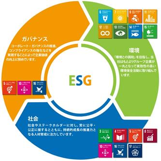
持続可能な開発目標（SDGs）達成への貢献
2015年９月に国連サミットにおいて採択された「持続可能な開発目標（SDGs）」に盛り込まれている17の目標は世界共通で取り組むべき目標であると同時に、民間企業に対してイノベーションを求めるものであると捉えています。
当社グループも事業活動を通してSDGs達成に貢献していくことが重要であると認識しています。17の目標のなかから当社グループの事業と関連性が高いものを特定し、それらの達成に向けて下記の重点テーマにおける取り組みを推進していきます。
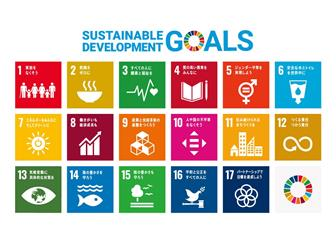
カナモトグループのＥＳＧにおける重点テーマ
|
|
重点テーマ |
関連するSDGs |
当社グループの取り組み |
|
|
価値創造 |
SDGs達成に 貢献するビジネス |
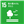 
|
製品・サービスを通じて、SDGsの達成に貢献する新しい価値を創造みし、持続的な社会の発展に貢献します。 |
|
|
価 値 創 造 を 支 え る 基 盤 |
Ｅ |
脱炭素につながる「レンタル」というビジネス 脱炭素に向けた環境対策機への資産シフト ＴＣＦＤへの取り組み |
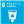 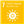 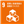 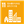
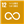 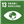 
|
限られた地球資源のなかで持続可能な社会を実現するために、環境法規の遵守、適切な環境マネジメントの推進はもとより、あらゆる事業活動において環境との関わりを認識し、環境への負荷を低減するとともに生物多様性を保全します。 |
|
Ｓ |
ディスクロージャーとＩＲ活動の充実 |
|
公平性・透明性が高く、速やかな情報開示と開示媒体の拡充を実践するとともに、国内外の株主・投資家に向けたＩＲ活動の充実を図ります。 |
|
|
地域社会および芸術文化への貢献 |
|
地域社会とのパートナーシップを強化し、芸術文化や教育、コミュニティの活性化に寄与・貢献することを目指します。 |
||
|
安全衛生体制の強化 |
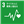 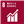 |
すべての役職員が安全で心身ともに健康で活き活きと仕事に取り組むことができる職場環境の維持・向上を目指します。 |
||
|
人材育成の環境整備 |
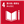 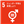 
|
さまざまな視点・考え方を持った人材がそれぞれの個性や能力を十分に発揮し、その多様性によってイノベーションが生まれる環境を目指します。 |
||
|
Ｇ |
コーポレート・ガバナンス コンプライアンス 内部統制システム リスクマネジメント |
|
企業価値を向上していくために、コンプライアンスの強化、コーポレート・ガバナンスやコンプライアンスの推進が重要な経営課題であると認識し、これを推進します。 |
|


当社にとってサステナビリティとは、自らが持続的な企業価値の向上を図るとともに、社会の持続的発展に貢献していくことを基本としています。
当社は、建設機械のレンタルを主業とする事業を通じて社会における課題解決に貢献すべく努めています。近年の気候変動や人権など人類の持続性に対する危機感が増す中、2015年９月には、「持続可能な開発目標（SDGs）」が国連で採択され、2030年までに解決すべき国際社会の共通目標が定められました。また、気候変動対策の新たな国際ルールであるパリ協定が2016年11月に発効されるなど、地球規模での持続可能性の追求が期待されており、当社もSDGsを意識した運営を進めている中、2021年７月には気候関連財務情報開示タスクフォース（ＴＣＦＤ）の提言にも賛同しました。
当社では、企業価値の持続的な向上には、このような環境や社会のサステナビリティに関する課題に対して積極的かつ能動的に対応することが必要だと考えています。ついては、下記のとおりサステナビリティ方針を策定し、それを実践していくための仕組みや体制を整備しました。
「サステナビリティ基本方針」
私たちカナモトは、グループビジョンである持続可能な成長基盤の構築を目指すとともに、社会と共生する「良き企業市民」として以下の各項目を実行することにより持続可能な社会の実現に貢献します。
１．「レンタル」というシェアリングエコノミーの特性を活かし、気候変動等の地球環境問題改善への貢献を目指します。
２．人権の尊重、従業員の健康・労働環境への配慮を進め、社会的労働環境改善への貢献を目指します。
３．取引先との公正・適正な取引を実践し、持続的な相互繁栄を目指します。
４．自社の危機管理対策はもとより、日本の防災・減災・国土強靭化など自然災害等への危機管理向上への貢献を目指します。
当社は社会の変化に対応すべく、定期的にサステナビリティ委員会で、持続可能な社会の実現に向けた課題や取組状況およびその成果等について報告・協議するものとし、これを取締役会に報告しています。取締役会はその報告を受け、課題に対する取組への監視・監督機能を発揮し、その進捗や見直しの方向性を確認するとともに、重要事項については審議しています。
今後も持続的な企業価値の向上を目指し、事業を通じた社会的課題の解決をより確実なものにし、ステークホルダーの皆さまの期待に応えていきます。
１．脱炭素につながる「レンタル」というビジネス
政府は2020年10月に「2050年カーボンニュートラル（脱炭素化）」を宣言し、2021年４月には2030年のCO2排出を2013年度比で46％削減するとしています。また、2021年10月に閣議決定された「第６次エネルギー基本計画」では、この宣言と目標の実現に向けた「グリーン成長戦略」が盛り込まれ、エネルギーの安定供給やコスト低減が掲げられています。当社も脱炭素を含めた環境対策の重要性が高まっていることを強く認識しています。
当社グループが主業としている「レンタル」はシェアリングエコノミーそのものであり、社会全体の低炭素化に貢献するビジネスともいえます。また、当社が毎年定期的に購入している建設機械の製造業界においても、ハイブリッド機、ＩＣＴ機、電気駆動機などの省エネ性能に優れた機械の開発が進んでいます。
日本建設機械工業会の資料「低炭素社会実行計画2030年目標」によれば、建設機械主要３機種（油圧ショベル、ホイールローダー、ブルドーザー）の燃費改善や、ハイブリッド式を含めた省エネ型建設機械の開発と実用化によって、2030年のCO2削減ポテンシャルは約160万t-CO2（1990年基準）と試算されています。また、業界全体における2030年のCO2削減目標として「製造に係る消費エネルギー原単位を、2013年実績に対して17％減」が掲げられており、製造分野においても脱炭素への動きが加速しています。
脱炭素に向けた環境対策機への資産シフト
当社は、従前から計画的に排ガス対策機への資産シフトを実施しています。建設機械の排ガス規制に則った機種を毎年定期的に約3,000台購入し入れ替えていることに加えて、効率的な配車手配やDXの取り組みによる業務の最適化も含めると、着実に脱炭素を進めていると考えています。
また、当社ではレンタル用建設機械だけではなく、自社用の営業車両にも低燃費・低排出ガス認定を受けた車両を積極的に導入しています。ハイブリッド車の量産が始まった1988年以来、いち早く営業用車両に採用し、その後も同様の低燃費・低排出ガス車への更新を継続しています。
さらに、営業所の屋上に太陽光発電設備を設置し、再生可能エネルギーを積極的に利用する活動も行っています。再生可能エネルギーを社内の消費電力に充てることでCO2削減に寄与するとともに、大規模災害などで停電が発生した場合でも電源が確保でき、災害対応に必要な業務遂行体制の確保にもつながります。
脱炭素を果たし持続可能な社会を実現するためには、ユーザーニーズへの対応と環境保全への配慮の両立が不可欠です。これからも環境配慮型ビジネスであるレンタルを堅実に提供し、環境技術を生かした機械への更新を積極的に進めてまいります。
２．気候変動関連の情報開示（ＴＣＦＤ提言に沿った開示）
当社は、気候変動を含む環境課題への対応を重要な経営課題の一つと認識しています。
2021年７月には、ＴＣＦＤ（気候関連財務情報開示タスクフォース、※１）へ賛同を表明し、「ＴＣＦＤコンソーシアム」（※２）に加入しました。
低炭素・脱炭素を求める社会や市場の動きが活発化する一方で、異常気象や水害等の激甚化が顕在化しています。建機レンタル業の社会的使命である、防災・減災・災害時の復旧への貢献をはじめ、レンタル業というシェアリングエコノミーの特性を活かし、建機の最大効率利用を目指し、事業を通じて、気候変動に関連する社会活動の解決に貢献できるよう進めてまいります。
※１ The Task Force on Climate-related Financial Disclosuresの略。Ｇ20の要請に基づき、FSB（Financial Stability Board／金融安定理事会：各国の金融関連省庁および中央銀行からなり、国際金融に関する監督業務を行う機関）によって2015年に設立されたタスクフォース。金融市場の不安定化リスクを低減するため、企業に対し、気候変動が事業活動に与えるリスクと機会の財務的影響、具体的な対応・戦略等を情報開示することを提言。
※２ ＴＣＦＤに賛同した投資家と企業が共同で産業ごとにシナリオ分析・定量化の手法を開発し、共有することを目的として発足されたコンソーシアム。
（１）ガバナンス
気候関連のリスクおよび機会に係る組織のガバナンスについては、社長を委員長、経営層、実務メンバー等を委員とするサステナビリティ委員会にて審議・決定し、取締役会に報告しています。また特に重要な方針については、取締役会に付議し決定しています。決定された方針や施策を各部門の事業計画に組み込み実施し、更に委員会で検討し、取締役会で定期的に報告しています。なお、二酸化炭素排出につながるエネルギーの用量について各事業所からの報告体制を確立してサステナビリティ委員会に報告し、把握・監視を実施しております。
（２）戦略
気候関連のリスクおよび機会が組織の事業・戦略・財務計画に及ぼす実際の影響および潜在的な影響については、気候関連問題が事業に与える中長期的なインパクトを把握するため、2030年以降における国内事業のうち、建設関連事業を想定し、シナリオ分析を実施しました。 分析においては、産業革命前に比べ2100年までに世界の平均気温が４℃前後上昇することを想定した４℃シナリオと、２℃／1.5℃前後上昇する２℃／1.5℃シナリオを採用し、各シナリオにおいて政策や市場動向の移行（移行リスク・機会）に関する分析と、災害などによる物理的変化（物理リスク・機会）に関する分析を実施しました。使用したシナリオのうち代表的なものは、移行リスク・機会の分析については、IEA（International Energy Agency、国際エネルギー機関）によるStated Policy Scenario(STEPs)（現時点で各国が発表している環境政策は実現されるが、COP21パリ協定※の長期目標は達成されず、2100年までの気候変動による気温上昇が産業革命以前に比べて４℃程度生じることを想定したシナリオ）、IEAによるSustainable Development Scenario(SDS)（COP21パリ協定の長期目標達成に向けて国際的な協調が進むことにより、2100年までの気候変動による気温上昇が産業革命以前に比べて２℃より低く保たれることを想定したシナリオ）、およびIEAによるNet ZERO by 2050(NZE2050)、物理リスク・機会の分析については、IPCC（Intergovernmental Panel on Climate Change、気候変動に関する政府間パネル）によるRCP8.5（温室効果ガス排出量規制の対策が取られず、産業革命時期比で2.6～4.8℃の気温上昇が生じることを想定したシナリオ）、IPCCによるRCP2.6（温室効果ガス排出量が抑制され、気温上昇は産業革命時期比で0.3～1.7℃程度に留まることを想定したシナリオ）およびSR1.5（1.5℃特別報告書）です。
※ 2015年12月にフランスのパリで開催された第21回国連気候変動枠組条約締約国会議（COP21）において、2020年以降の温室効果ガス排出削減等のための新たな国際枠組みとして採択された協定。
主なリスクと機会、対応策は以下の通りです。
|
項目 |
事業への影響 |
対応策 |
||||
|
概要 |
４℃ シナリオ |
２℃／1.5℃ シナリオ |
||||
|
移行 |
リスク |
炭素税の導入 |
事業活動に炭素税がかかりコスト増 |
小 |
中 |
省エネの推進、環境対策機械への移行 |
|
脱炭素社会に向けた各種規制の強化 |
規制によるコスト増、需要低下 |
小 |
大 |
省エネの推進、環境対策機械への移行 |
||
|
機会 |
省エネルギー・再生可能エネルギーニーズの拡大 |
環境にかかわる市場（再エネ、ＺＥＢ等）の拡大 |
中 |
大 |
省エネ・再生エネ案件への積極対応 |
|
|
物理的 |
リスク |
気温上昇 |
建設現場等の環境変化に対応するためコスト増 |
大 |
大 |
ＩＣＴ等を活用した対応強化 |
|
自然災害の激甚化 |
被害を受ける可能性、災害の影響で保険料、運賃等の上昇 |
中 |
中 |
サプライヤー、保険会社等とも連携したＢＣＰ強化 |
||
|
機会 |
国土強靭化の取組 |
国土強靭化の需要拡大 |
大 |
大 |
インフラ整備案件の営業強化 |
|
|
気候変動による市場の変化 |
気候変動対策を受けた新たな需要 |
中 |
中 |
市場動向に即した営業強化 |
||
（３）リスク管理
気候関連のリスクについて組織が特定・評価・管理する手法については、社長を委員長、経営層、実務メンバー等を委員とするサステナビリティ委員会にて審議・決定し、取締役会に報告しています。また特に重要な方針については、取締役会に付議し決定しています。決定された方針や施策を各部門の事業計画に組み込み実施し、更に委員会で検討し、取締役会で定期的に確認、決定報告しています。リスク管理の一つとして、地球温暖化の原因の一つである二酸化炭素の排出量について削減目標を定めるとともに、二酸化炭素排出につながるエネルギーの使用量について各事業所からの報告体制を確立してサステナビリティ委員会に報告し、把握・監視を実施しております。
また、気候変動関連リスクを含む全ての業務リスクについては、サステナビリティ委員会、内部統制委員会、コンプライアンス委員会、法務室をそれぞれ設置し、内部統制システムに対応した体制を整えています。
（４）指標及び目標
当社は、2050年に向けた長期目標を含むCO2削減目標（総量・原単位）を設定し、事業活動におけるCO2排出削減の取組を推進しています。
スコープ１ 燃料使用に伴う排出 基準年2013年比2030年50％削減
スコープ２ 購入した電力・熱等の使用に伴う排出 基準年2013年比2030年50％削減
３．人的資本政策
戦略
（１）基本方針
建設機械をレンタルする当社のビジネスモデルでは、お客様に提供出来る付加価値は、建設機械そのものからではなく、社員一人ひとりが生み出すものであると考えております。従いまして、人材を確り教育しそれぞれのスキルを向上させていくことで、人的資本の価値を高めていくことが重要です。以下の２項目を基本とし、更に以下の２方針に基づき具体化して参ります。
①エンゲージメント
当社グループ運営の中心に以下の３つの行動指針を掲げております。
イ．変革を求め会社の活性化に総力を結集せよ
ロ．我が社は利益を追求する戦斗集団であることを自覚せよ
ハ．自主・自律の心を持て
この指針を基に、長年にわたり社員のロイヤリティの向上を図ってまいりましたが、これを更に会社と社員がお互いに信頼しあうエンゲージメントに高めることを目指します。
②ダイバーシティ＆インクルージョン
人種・国籍・性別・年齢といった、社員それぞれの違いを受け入れ認め合う一体感を醸成していきます。
イ．正社員2,041名の内、外国籍の社員は1.2％の24名
ロ．2023年６月現在の障がい者雇用率は3.45％（法定雇用率は2.3％）
ハ．正社員の新卒:キャリア採用比率は35.2％：64.8％、内役職者の比率も34.7％：65.3％と略同等
（２）人材育成方針
①企業理念および行動指針を具現化できる人材を育成する
②自主的にスキルや資格の取得を目指す社員の支援を行う
③多様な視点や価値観の醸成を目指し、研修制度の拡充や社外との交流を促進する
（３）社内環境整備方針
社員が心身ともに健康に、そして安全に業務に取り組める環境を作り上げていく
①安全衛生体制の強化
・建設機械整備技能士は、特級26名・1級280名・2級577名
②健康、メンタルヘルスの維持、向上
・2022年11月より、福利厚生カフェテリアプラン(Benefit Station)を導入
・2023年３月より、従来の４週７休制から４週８休制に移行
・2023年10月に、社長より『カナモト健康経営宣言』を発出、「健康経営優良法人」認定申請
③ハラスメント対策
・2022年２月に、全管理職対象に総時間約220分のe-ラーニングを実施、以降の昇格者にも継続実施
指標及び目標
当社は、すべての役職員がその能力を充分に発揮できるよう、性別に関わらず仕事と生活の調和が図れる働きやすい環境の整備に努めるため、以下の通り行動計画を策定しております。
①計画期間
2021年４月１日から2026年３月31日までの５年間
②内容
目標１ 女性が活躍出来る職域を拡大し、女性役職者数を現在の30％増とする
対策 イ．女性の営業職への職種転換、営業所事務長・ブロック事務長への積極的な登用
ロ．女性の営業職・技術職での採用強化と、社内交流会・研修充実による定着の促進
ハ．女性のキャリア形成の為の事務職リーダーシップ研修・上級役職者養成研修の拡充
目標２ 社員がより生き生きと、長く働くことが出来る職場環境を整備し、年次有給休暇取得率を30％向上する
対策 イ．ワークライフバランス確保に資するノー残業デイの継続や有給休暇取得率向上に向けたモニタリングの強化
ロ．職場での相互理解・協力体制構築に資する子育て・介護の両立支援制度の周知
目標３ 地域の子供達や学生の職業観・就業イメージの醸成に取り組む
対策 イ．各地域のイベントでの従業員や取引先・地域社会の子供達との交流の実施
ロ．学生を対象としたインターンシップ、学校と連携した授業協力・仕事見学会の実施
３【事業等のリスク】
有価証券報告書に記載した事業の状況、経理の状況等に関する事項のうち、経営者が連結会社の財政状態、経営成績及びキャッシュ・フローの状況に重要な影響を与える可能性があると認識している主要なリスクは、以下のとおりであります。なお、文中における将来に関する事項は、当連結会計年度末現在において当社グループが判断したものです。
（１）経済情勢について
当社グループの主力事業である建設関連は、官需・民需を問わず国内建設投資動向により、収益が大きく左右されます。よって、公共事業の大幅な削減、民間工事の落ち込み等が発生した場合、又は受注競争の激化によるレンタル用資産の貸出価格や運用状況の悪化によるレンタル用資産の稼働率が低下した場合には、今後の業績に影響を及ぼす可能性があります。なお、海外向け中古建機販売は売却時期によってはその時点での世界経済、為替動向にも影響を受けます。
（２）業績の季節変動について
公共事業は、毎年４月に予算決定がなされてから実際に工事が着工されるまで概ね６ケ月のタイムラグが生じます。したがって、当社グループの主力事業である建設関連は、毎期10月頃から３月にかけて最盛期を迎え、この期間に建設機械のレンタル需要が最も大きくなるというトレンドがあります。このため当社グループの売上高及び利益は上期（11～４月の６ケ月間）に集中する傾向があります。
（３）金利動向について
当社グループは、レンタル用資産等の取得、営業所出店に係る設備投資需要や事業活動に係る運転資金需要に対し、内部資金を充当する他、外部から資金を調達しております。これらの外部資金については、極力金利固定化等により金利変動による影響の軽減に努めておりますが、短期間の大幅な金利変動によっては、当社グループの業績及び財務状況等に影響を及ぼす可能性があります。
（４）債務保証について
当社グループは、関係会社の借入金に対しての債務保証契約を金融機関との間で締結しております。将来、債務保証の履行を求められる状況が発生した場合には、当社グループの業績及び財務状況等に悪影響を及ぼす可能性があります。
（５）固定資産の減損会計について
当社グループは、「固定資産の減損に係る会計基準」を適用しております。今後の経営環境の著しい悪化等により固定資産の収益性が悪化した場合には、当社グループの業績及び財政状況等に影響を及ぼす可能性があります。
（６）海外事業について
グループ内の在外子会社及び関連会社が実施する事業に関して、現地国の政情の変化、経済状況の変化、予期せぬ法令・規制の変更等により、影響を受ける可能性があります。当社グループは、在外子会社及び関連会社が所在する各国の情勢を定期的にモニタリングし、経営サポート等を図っております。
４【経営者による財政状態、経営成績及びキャッシュ・フローの状況の分析】
（１）経営成績等の状況の概要
当連結会計年度における当社グループ（当社及び連結子会社）の財政状態、経営成績及びキャッシュ・フロー（以下、「経営成績等」という。）の状況の概要は次のとおりであります。
① 財政状態及び経営成績の状況
経営成績
当連結会計年度におけるわが国経済は、新型コロナウイルス感染症に対する規制の緩和に伴う経済活動の正常化により、緩やかな回復が見られましたが、不安定な国際情勢による原材料価格の高騰や世界的な金融引締め、金融資本市場の変動など、依然として先行きは不透明な状況が続いております。
当社グループが関連する建設業界におきましては、安定的な公共投資に加え、民間設備投資の緩やかな持ち直しにより、建設投資は比較的堅調な状況で推移いたしました。しかしながら、建設コストの上昇や半導体の供給不足による機材供給遅れの懸念に加え、景気の後退による設備投資の抑制などにも留意が必要な状況が続いております。
このような状況のなか、当社グループでは、中期経営計画「Creative 60」（2020〜2024年度）の実現に向け、経営資源の効率的運用による利益率向上やシナジー効果の最大化に向けた地域戦略を推進するとともに、組織体制の再整備や部門間の連携強化を推し進め、稼働率の改善とレンタル単価の適正化に向けた資産管理体制の強化と遂行管理力の進化を図り、安定的な収益基盤の拡大に取り組みました。
2023年10月期の連結業績につきましては、売上高は1,974億81百万円（前年同期比5.0％増）となりました。利益面につきましては、将来を見据えた人財投資に加え、グループ内での吸収合併等による減価償却費や販管費の増加もあり、営業利益は119億58百万円（同9.6％減）、経常利益は124億88百万円（同9.4％減）、また、親会社株主に帰属する当期純利益は67億21百万円（同19.5％減）となりました。
セグメント別の経営成績は、次のとおりであります。
イ．建設関連
主力事業である建設関連におきましては、都市部の再開発工事や新幹線延伸工事、再生可能エネルギー関連工事の継続に加え、北海道や九州の半導体工場建設や安全保障関連工事等、各種大型案件の進行もあり、地域差はありますが、建設機械のレンタル需要は堅調さを取り戻しつつ推移いたしました。
また、当社グループでは、各種プロジェクト工事等への対応強化に向け、保有資産の更なる効率活用を追求しつつ、建設需要の高まりに対するレンタル用資産の安定供給の課題解決に努めた一方で、建設現場のＤＸ化や環境負荷低減の実現に向けた技術開発や業務提携を推進いたしました。
これらの結果、同事業における地域別売上高の前年同期比は、北海道地区1.1％増、東北地区8.4％増、関東甲信越地区5.0％増、西日本地区1.2％増、九州沖縄地区8.7％増となりました。
中古建機販売につきましては、レンタル用資産の運用期間の延長を進めつつ、適正な資産構成を維持するため、期初計画に基づき売却を進めていることから、売上高は前年同期比5.0％増となりました。
以上の結果、建設関連事業の売上高は1,780億87百万円（前年同期比4.5％増）、営業利益は103億９百万円（同10.4％減）となりました。
ロ．その他
その他の事業につきましては、鉄鋼関連、情報関連、福祉関連ともに堅調に推移したことから、売上高は193億93百万円（前年同期比10.2％増）、営業利益は11億44百万円（同7.1％減）となりました。
財政状態
当連結会計年度末の総資産は、前連結会計年度末から111億20百万円増加し3,164億40百万円となりました。これは主に「レンタル用資産」が100億69百万円増加したことによるものであります。
負債合計は、前連結会計年度末から80億54百万円増加し1,727億63百万円となりました。主な要因として「支払手形及び買掛金」が23億62百万円、「未払金」が12億21百万円、「長期借入金」が11億37百万円及び「長期未払金」が12億３百万円それぞれ増加したことによるものであります。
純資産合計は、前連結会計年度末から30億65百万円増加し1,436億77百万円となりました。これは主に「親会社株主に帰属する当期純利益」を67億21百万円計上した一方で、剰余金の配当により27億39百万円、「自己株式」の取得等により19億60百万円とそれぞれ減少したことによるものであります。
② キャッシュ・フローの状況
当連結会計年度末の現金及び現金同等物（以下「資金」という。）は450億93百万円となり、前連結会計年度末から19億53百万円減少しました。各キャッシュ・フローの状況は以下のとおりです。
（営業活動によるキャッシュ・フロー）
営業活動によって得られた資金は379億60百万円（前年同期比14.5％増）となりました。
これは主に「税金等調整前当期純利益」は121億６百万円、「減価償却費」は342億52百万円の収入をそれぞれ計上した一方で、「レンタル用資産の取得による支出」は56億23百万円、「売上債権及び契約資産の増減額」は54億56百万円及び「法人税等の支払額」は36億74百万円の支出をそれぞれ計上したことが要因であります。
（投資活動によるキャッシュ・フロー）
投資活動によって支出した資金は66億99百万円（前連結会計年度末は113億31百万円の支出）となりました。
これは主に「有形固定資産の取得による支出」を52億54百万円計上したことが要因であります。
（財務活動によるキャッシュ・フロー）
財務活動によって支出した資金は339億95百万円（前連結会計年度末は308億93百万円の支出）となりました。
これは主に「長期借入れによる収入」は142億５百万円の収入を計上した一方で、「長期借入金の返済による支出」は155億11百万円、「割賦債務の返済による支出」は261億85百万円及び「配当金の支払額」は27億39百万円の支出をそれぞれ計上したことが要因であります。
③ 販売の実績
当連結会計年度の販売実績をセグメントごとに示すと、下表のとおりであります。
|
セグメントの名称 |
当連結会計年度 （自 2022年11月１日 至 2023年10月31日） |
前年同期比 （％） |
|
建設関連 |
178,087百万円 |
4.5 |
|
その他 |
19,393百万円 |
10.2 |
|
セグメント間取引消去 |
－ |
－ |
|
合計 |
197,481百万円 |
5.0 |
（２）経営者の視点による経営成績等の状況に関する分析・検討内容
経営者の視点による当社グループの経営成績等の状況に関する認識及び分析・検討内容は次のとおりであります。なお、文中の将来に関する事項は、当連結会計年度末現在にて判断したものであります。
① 財政状態及び経営成績の状況に関する認識及び分析・検討内容
当社グループの当連結会計年度の財政状態及び経営成績は、「４ 経営者による財政状態、経営成績及びキャッシュ・フローの状況の分析 （１）経営成績等の状況の概要 ① 財政状態及び経営成績の状況」に記載のとおりであります。また、当社グループの経営成績に重要な影響を与える要因については、「３ 事業等のリスク」に記載のとおりであります。
なお、当社グループの目標とする経営指標の実績値は、下表のとおりであります。
|
|
前連結会計年度 （自 2021年11月１日 至 2022年10月31日） |
当連結会計年度 （自 2022年11月１日 至 2023年10月31日） |
|
自己資本比率 |
43.2％ |
42.5％ |
|
ＲＯＥ（自己資本利益率） |
6.4％ |
5.0％ |
|
ＥＢＩＴＤＡ＋（減価償却他調整前営業利益） |
56,241百万円 |
57,894百万円 |
② キャッシュ・フローの状況の分析・検討内容並びに資本の財源及び資金の流動性に係る情報
イ．キャッシュ・フローの状況の分析・検討内容
当社グループのキャッシュ・フローの状況の分析については、「４ 経営者による財政状態、経営成績及びキャッシュ・フローの状況の分析 （１）経営成績等の状況の概要 ② キャッシュ・フローの状況」に記載のとおりであります。
ロ．資本の財源及び資金の流動性
当社グループの運転資金需要の主なものは、売上原価、販売費及び一般管理費の営業費用であります。投資を目的とした資金需要は、レンタル用資産の購入及び有形固定資産の取得等によるものであります。短期運転資金は自己資金及び金融機関からの短期借入を基本としており、設備投資や長期運転資金の調達につきましては、割賦契約及びリース契約等の資金調達手段を活用しながら安定的な資金の源泉を確保するため、金融機関からの長期借入を行うことを基本としております。
なお、当連結会計年度末における借入金及びリース債務等を含む有利子負債残高は、下表のとおりであります。
|
|
年度別要支払額（百万円） |
||||
|
契約債務 |
合計 |
１年以内 |
１年超３年以内 |
３年超５年以内 |
５年超 |
|
短期借入金 |
900 |
900 |
－ |
－ |
－ |
|
長期借入金 |
50,396 |
14,600 |
26,610 |
8,500 |
686 |
|
長期未払金（割賦） |
61,567 |
21,719 |
27,614 |
10,992 |
1,241 |
|
リース債務 |
5,272 |
1,645 |
2,360 |
1,052 |
213 |
上記の表において、連結貸借対照表の１年内返済予定の長期借入金、未払金に含まれている割賦契約に係る未払金及び流動負債のリース債務は、長期借入金、長期未払金（割賦）及びリース債務にそれぞれ含めております。
③ 重要な会計上の見積り及び当該見積りに用いた仮定
連結財務諸表の作成に当たって用いた会計上の見積り及び当該見積りに用いた仮定のうち、重要なものについては、「第５ 経理の状況 １ 連結財務諸表等（１）連結財務諸表 注記事項（重要な会計上の見積り）」に記載のとおりであります。
（３）経営成績に影響を与える重要な要因について
「３ 事業等のリスク」に記載のとおりであります。
（４）財務政策
レンタル用資産購入等の設備投資計画を踏まえながら、より有効かつ安価な資金調達手段を模索しており、資金調達と資金運用の多様化・効率化を図りつつ、さらには受取手形等の債権について流動化等を行うことで、資産・負債バランスの軽量化に取り組んでおります。
５【経営上の重要な契約等】
該当事項はありません。
６【研究開発活動】
該当事項はありません。